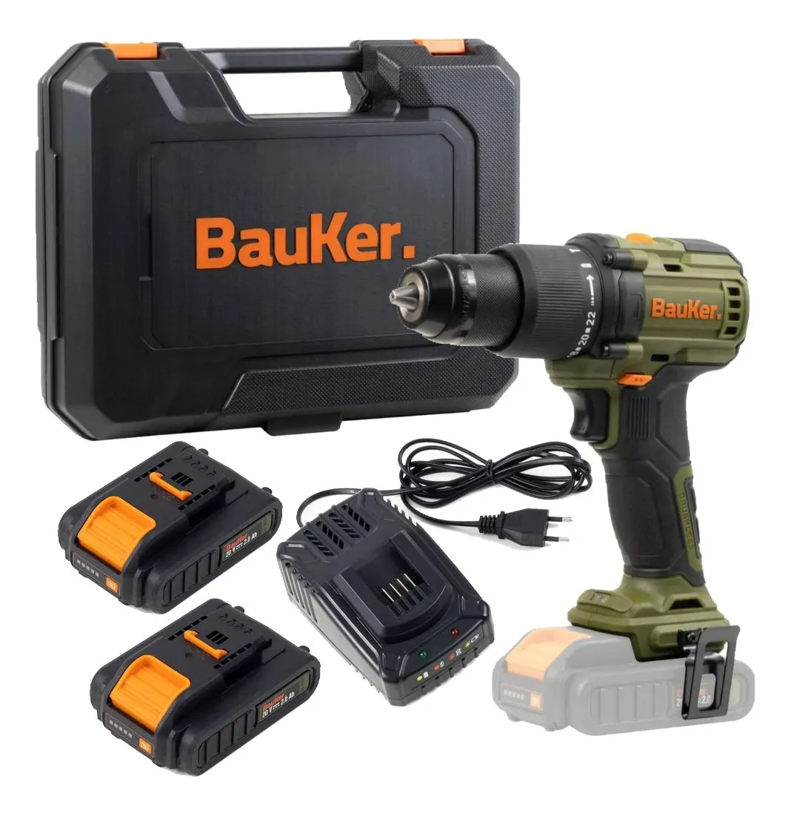

Cómo elegir un taladro
El taladro es una de las herramientas más utilizadas en trabajos de construcción, reparación y mejoramiento del hogar.
Antes de elegir uno es importante considerar el tipo de trabajo que se realizará. Para tareas simples puede ser suficiente un taladro de uso doméstico, mientras que para trabajos más exigentes puede ser necesario utilizar una herramienta de mayor potencia.
También es importante considerar características como el tamaño, el tipo de alimentación, la velocidad y la posibilidad de utilizar diferentes brocas y accesorios.
Volver a Blogs